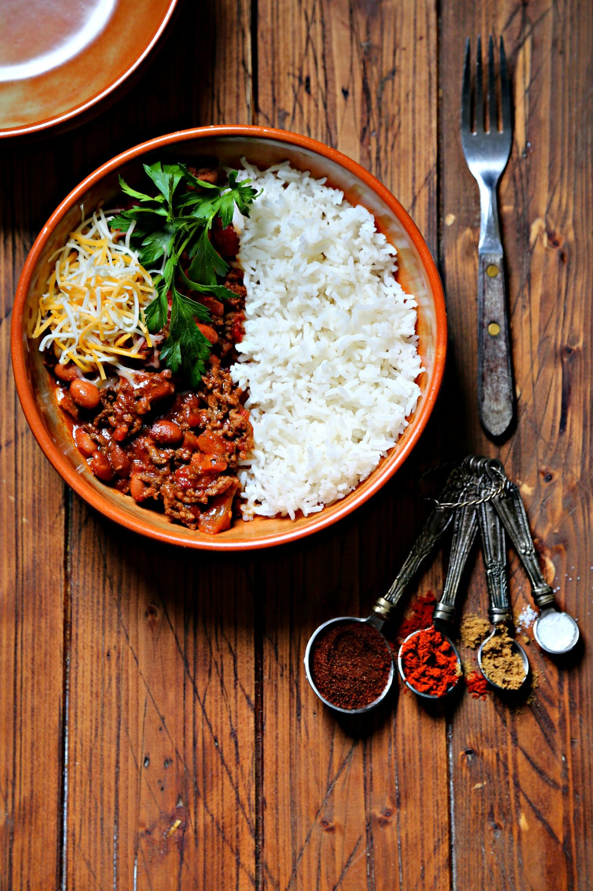
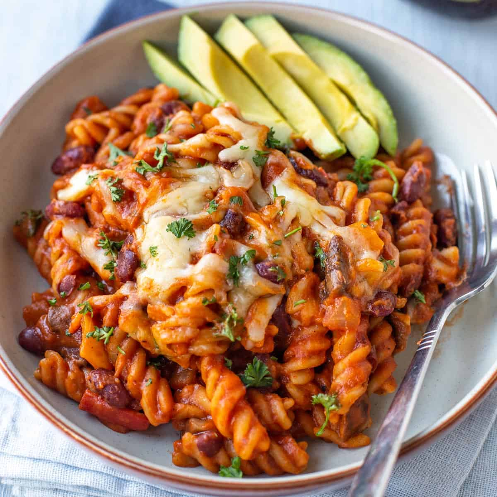
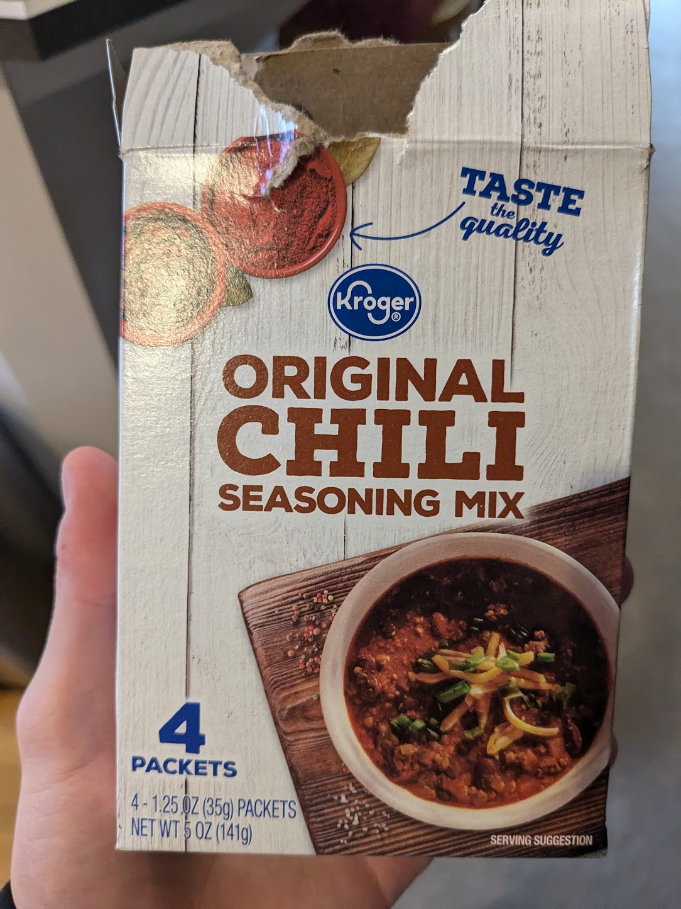
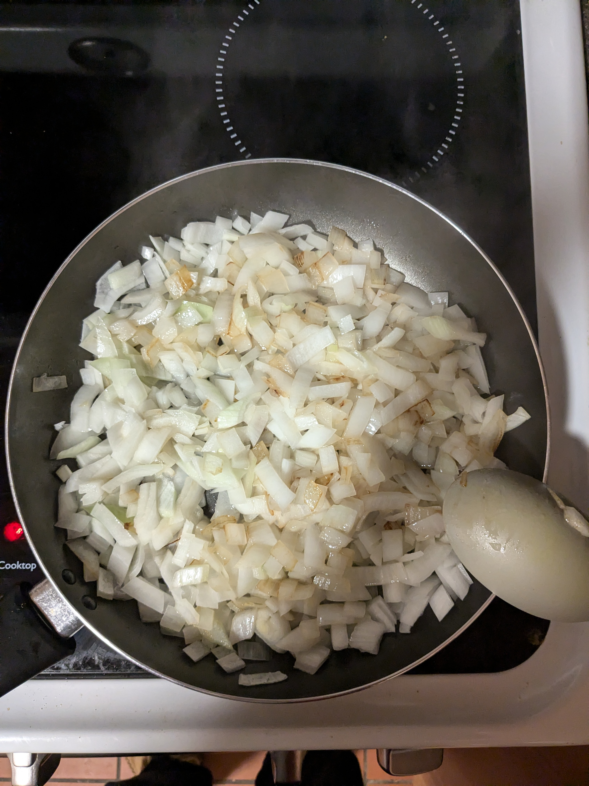
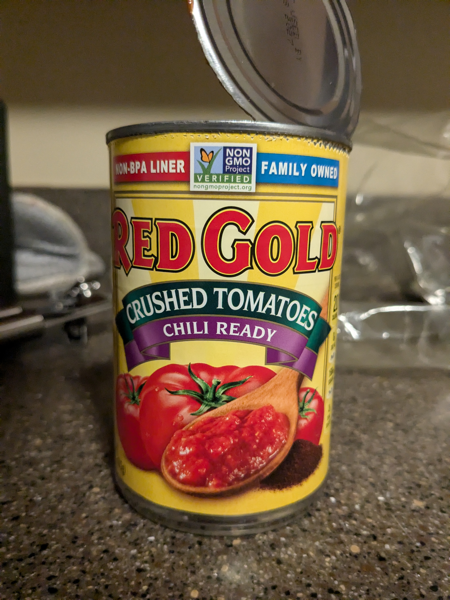
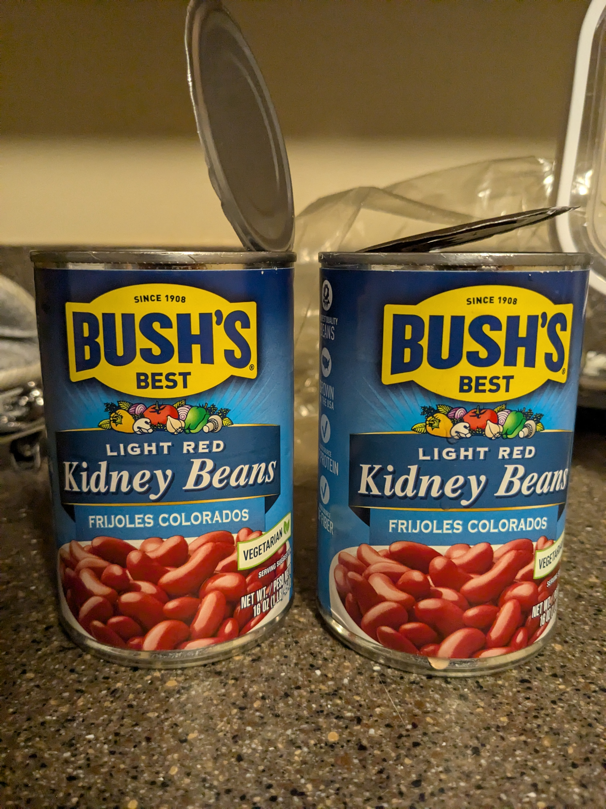
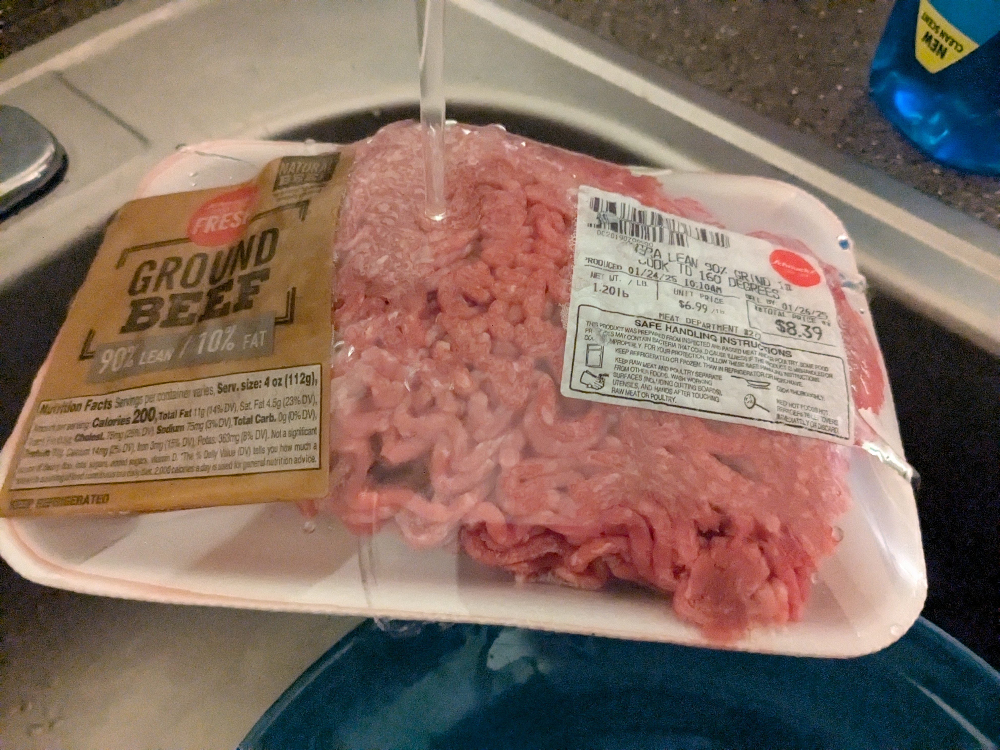
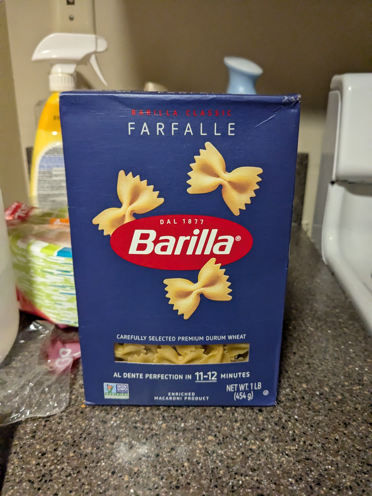
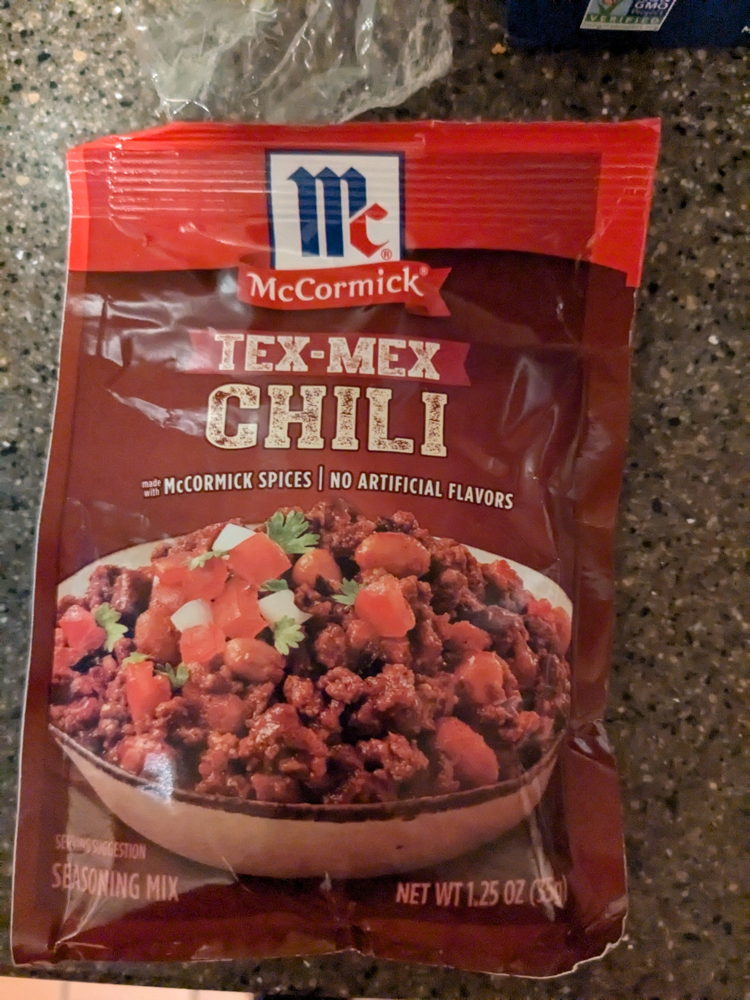
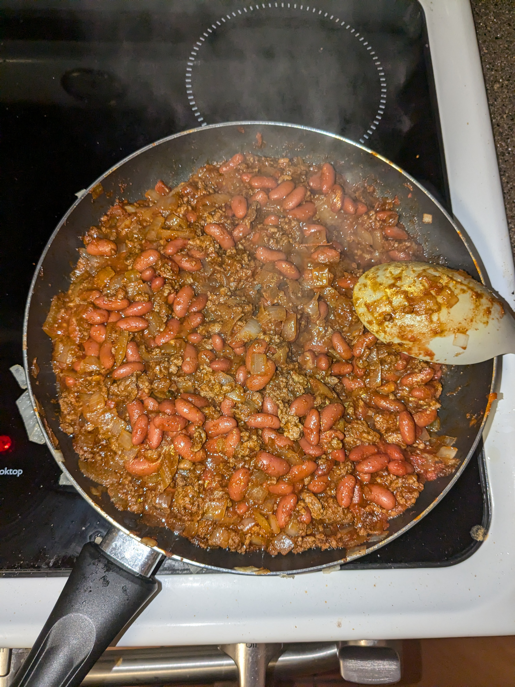

Recipe Content
Description:
This is my mom's chilli recipe that she makes and it serves as a comfort food for me. I usually meal prep it for the week and eat it for most dinners with a side of salad. I really like it but it isn't anything that special. Additionally, I will take more photos of the process when I make it next for this project. It is solely a basic chilli recipe surrounding Kroger's Original Chilli spices mix.
Serving Size: 4-6
Ingredients:
- 1 lb Ground Beef
- 2 Cans (15oz) of Red Kidney Beans
- 1 Can (15oz) of Crushed Tomatoes
- 1 Chili Mix Packet (Kroger Original Chili Mix or Alternative)
- 1 Medium Onion
- 2 Tbsp Canola Oil
- 1 Box of Noodles or 2 Cups of Rice
- Shredded Cheese
Necessary Tools:
- Can Opener
- Chef's Knife
- 1 Large Pot or Pan
- Rice Cooker or Additional Pot
- Spatula
- Cutting Board
Prep:
- Defrost your ground beef before cooking or put under warm water until defrosted ~10min before in case of emergency.
Process:
Time Cost: ~40 min
- Cut onion into cubes and fry in oil until translucent.
- Add beef and spices. Fry for 10 minutes until cooked.
- Add beans (washed and strained) and crushed tomatoes.
- Let simmer (lower heat) for 10-15 minutes.
- While simmering boil noodles or cook rice on the side.
- Serve chili with noodles/rice and add cheese on top.
Sample Imagery
- 
- 
- 
- 
- 
- 
- 
- 
- 
- 
Recipe Website Inspiration
- Blue Apron: The imagery is great: it shows all the ingredients listed with roughly the right amounts. I think the font could be bigger in some places with better spacing between images and text. Color scheme appears clean which is appealing for food.
- Hello Fresh: Interface is a little overcrowded as there are a lot of things going on with a somewhat strange grid with strange spacing. I like the color scheme and font which makes it very readible.
- Budget Byte$: I like the boxy kind of cartoony buttons and highlights I think it makes it more beginner friendly feeling and less professional which is what I am going for on my site. The white space on the right side provided by the aside window not scrolling with the window is a little strange and a waste of a lot of screen realestate.
Non-Recipe Website Inspiration
- Design Systems Repo: The design of this sight is vey clean and the colors are pretty un-aggresive, but still bright which I like. It is kind of the epitome of minimalism when it comes to design.
- Bryant Personal Portfolio: I know we aren't using interactive elements for this project, but I really enjoyed the child-like feel of this site. I want my recipes and recipe site to be very friendly and approachable so I like a lot of the cartoony elements of this site.
- Ling's Cars: I like the colorful out there feel of this website. I think there is too much going on so if I take from this I will get a bad grade in this class, but maybe there are bits and pieces I can get inspired by without all the clutter.